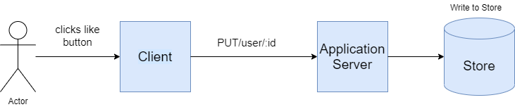

Birds Eye Overview of Session Plan
- What's System Design?
- Aspects of Design thinking
- CQRS Design Pattern
- Real Time CQRS Design Pattern Scenario
- Way Ahead
- Watercooler convos
What's System Design?
System:
Assembly of various different components to solve a business
problem.

Design:
Optimistic / Efficient way of connecting the components to achieve
desired performance and outcome.
Aspects of Design Thinking

Availability
Scalability
Resiliency
Data Management
Performance
Security
CQRS Design Pattern
Real Time CQRS Design Pattern Scenario
Way Ahead
WaterCooler Convos